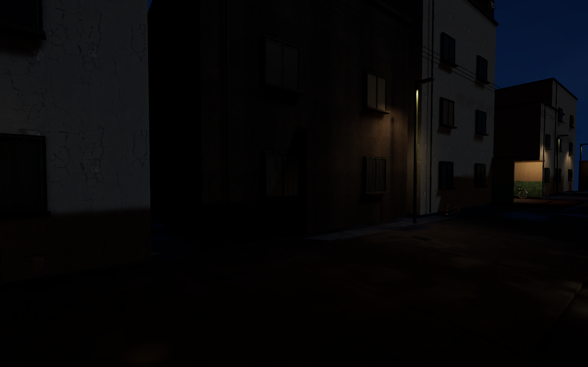

Neighborhood connection
Actual Unity captures. The last two views use matching entrance camera positions.
 Main Alley
Main Alley
Junction Looking Left
Looking Left Looking Right
Looking Right Apartment Exterior
Apartment Exterior Entrance Outside
Entrance Outside Into Apartment
Into Apartment From Inside
From Inside Full Building
Full Building Street Layout
Street Layout Alley Entrance Match
Alley Entrance Match Apartment Entrance Match
Apartment Entrance Match